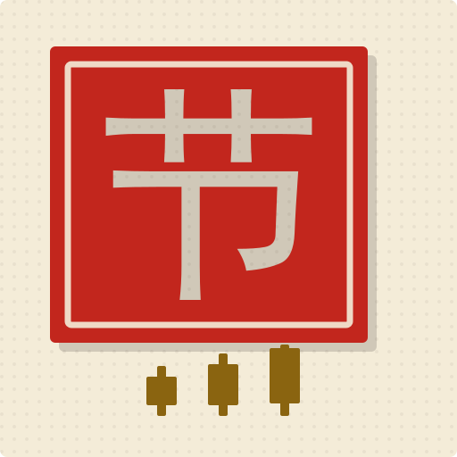
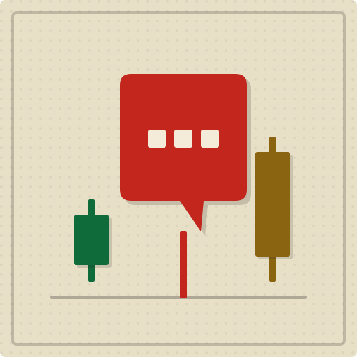
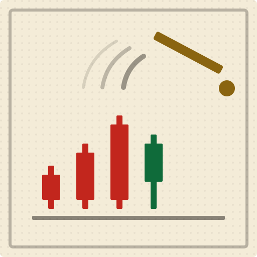
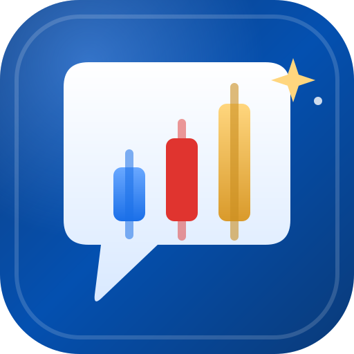

旧 icon.svg 用了 12 色 / 10 渐变,全部不属于纸墨主题(遗留自「知乎蓝×白底终端」时代)。以下三案只用主题 token:平涂、硬边压印、小圆角。
| 候选 | 128px 构图 | 48px | 32px 浏览器标签 |
18px 极限 | 标签栏实景 | 开始页 h1 实景 |
|---|---|---|---|---|---|---|
| A 印章朱红印面 + 阴刻「节」+ 金蜡烛 |  |
带节奏 | 《带节奏》 | |||
| B 气泡蜡烛舆论气泡 = 蜡烛实体,尾巴即下影线 |  |
带节奏 | 《带节奏》 | |||
| C 指挥棒带节奏的那只手,K线随之起落 |  |
带节奏 | 《带节奏》 | |||
| 旧版对照:冷蓝 + 渐变高光 |  |
带节奏 | 《带节奏》 |